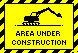

Simple pictures like plots can be described
in a manageably way at a higher level than
bitmap representation,
as a list of instructions that tell to
a particular interpreter how to redraw
the picture.
In this way we can generate a good
bitmap for all dimensions and media
resolutions.
This representation is lossless, because
permits to rescale picture without loss
of quality.
Metafiles are collections of shapes drawn into
a device context.
They are essentially a list of GDI calls that
can be played back on demand to create a picture.
GDI , Graphics Device Interface,
is a Windows® standard for representing
graphic objects and transitting them to
output devices
I recommend this format to embed plot images
in your WYSIWYG editor.
There are two types of metafiles available
to Windows users.
The one supported in MattPlot has the
extension .emf (Enhanced MetaFile)
and is designed for use in the 32-bit world.
The other one, with extension
.wmf (Windows MetaFile),
is a legacy from the old 16-bit world
and should be avoided.

This function is not yet implemented.
SVG is an XML application that describes a
vectorial drawing.
Some browsers like Firefox® have an internal
SVG renderer.